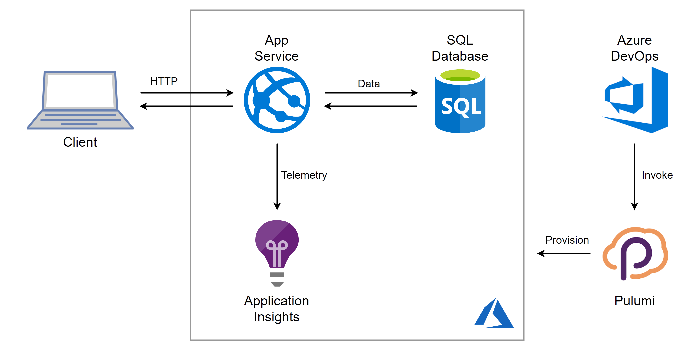
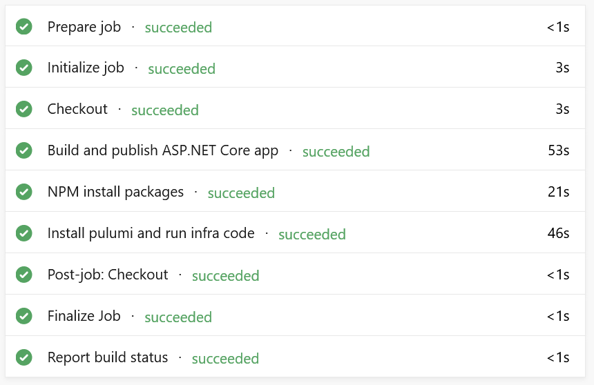
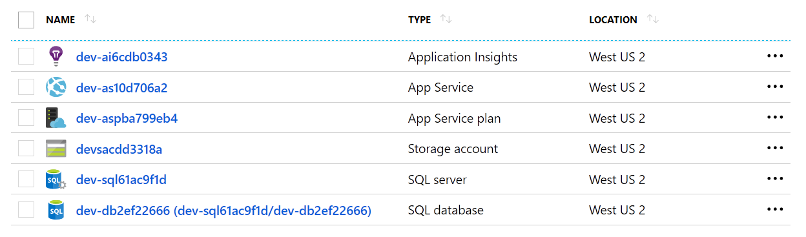
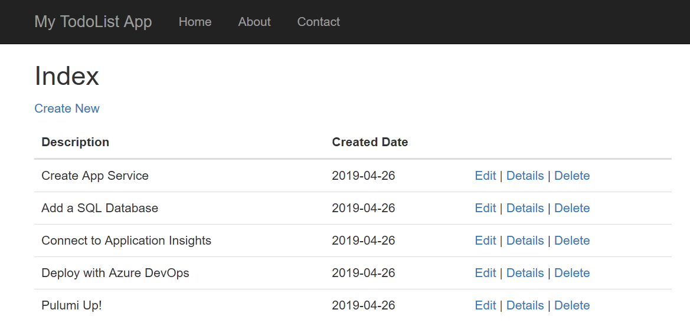
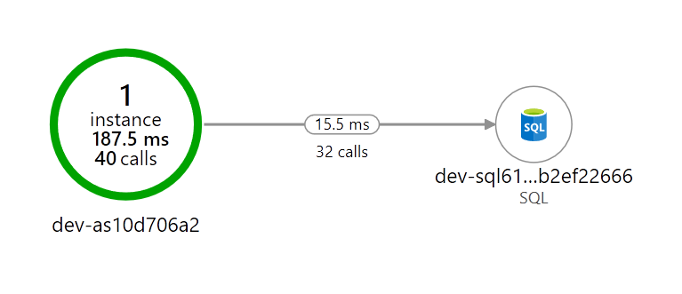

Level up your Azure Platform as a Service applications with Pulumi

Today’s guest post is from Mikhail Shilkov, a Microsoft Azure MVP and early Pulumi user and contributor - enjoy!
Today I want to guide you through the process of developing Pulumi programs to leverage Azure Platform-as-a-Service (PaaS) services. My language of choice is TypeScript—a powerful and expressive typed language, which is very familiar to many Azure users.
Azure Platform as a Service
Azure consists of dozens of cloud services, from VMs to Kubernetes to Serverless. In my experience, a lot of customers choose Azure for its strong portfolio of PaaS-level services.
Azure App Service is a well-established managed compute offering to run web applications, RESTful APIs, or background workers. Azure SQL Database is a fully managed service to run relational databases with features like high availability and backups available out-of-the-box. Enriched by services like Azure DevOps for CI/CD and Application Insights for APM, PaaS is a powerful way to get the benefits of the cloud without the need to fully re-architect software solutions.
The power of relying on PaaS is evidenced by significant customer adoption. App Service is among the most popular compute services in Azure:
If you use automation (ARM, scripts, TF, …) to define and deploy Azure infrastructure, which services are your primary target? Vote & RT!
– Mikhail Shilkov (@MikhailShilkov) April 23, 2019
Nonetheless, PaaS services pose different challenges to application developers. In particular, the usage of multiple cloud services demands an investment in infrastructure automation. That’s where Pulumi comes to the rescue.
A Sample Application
For this walkthrough, I took an existing application from Azure Samples GitHub: .NET Core MVC sample for Azure App Service. Predictably enough, it’s a Todo List application, and this time it is a web app built with ASP.NET Core, Entity Framework Core and a SQL database. Build an ASP.NET Core and SQL Database app in Azure App Service describes how to deploy such application to Azure App Service by means of clicking buttons in the Azure portal.
“Friends don’t let friends right-click publish”
Instead, I suggest relying on infrastructure as code. I built a Pulumi program and integrated it into a fully automated build and deployment pipeline in Azure DevOps.
Here is a sketch of the solution:

Let’s get started building together!
Solution Structure
The following snippet shows the essential elements of the solution:
infra # Cloud infrastructure definition goes here
index.ts # Pulumi program in TypeScript
src
Controllers #
Models # ASP.NET Core web app
Views # /
Data # EF Core Data Context
wwwroot # Static assets (JavaScript/CSS/Images)
zure-pipelines.yml # Azure DevOps pipeline definition
As a first step, I cloned the Todo List
app into
the src folder. There’s nothing specific to Pulumi here: it’s just an
ASP.NET Core app. It could be your application
instead.
Note: You can find the full code of the application, infrastructure definition, and deployment pipeline in Pulumi Examples repository.
Bootstrapping a Pulumi Program
The Pulumi development experience is powered by the
Pulumi CLI. After
installing the CLI, I jump into an empty
infra folder and run pulumi new azure-typescript accepting all the
default answers. The CLI bootstraps a skeleton of a TypeScript NodeJS
application. The code looks like this:
import * as pulumi from "@pulumi/pulumi";
import * as azure from "@pulumi/azure";
// Create an Azure Resource Group
const resourceGroup = new azure.core.ResourceGroup("resourceGroup", {
location: "WestUS",
});
// Create an Azure resource (Storage Account)
const account = new azure.storage.Account("storage", {
resourceGroupName: resourceGroup.name,
location: resourceGroup.location,
accountTier: "Standard",
accountReplicationType: "LRS",
});
// Export the connection string for the storage account
export const connectionString = account.primaryConnectionString;The infrastructure pieces are defined by instantiating objects of
appropriate types: ResourceGroup and Account in this example.
Stacks
If an application is developed to run and evolve for months and years, it’s smart to invest in practices like Continuous Integration and Deployment (CI/CD) and Infrastructure as Code (IaC). It’s quite likely that such an application will run in multiple environments: production, staging, development, and so on.
Pulumi comes with a handy concept of stacks— isolated, independently configurable instances of a Pulumi program. A separate stack can be designated for each deployment environment.
We can take the notion of the stack into the program and apply the stack name to definitions of infrastructure resources:
// Use first 10 characters of the stackname as prefix for resource names
const prefix = pulumi.getStack().substring(0, 9);
const resourceGroup = new azure.core.ResourceGroup(`${prefix}-rg`, {
location: "WestUS",
});
const resourceGroupArgs = {
resourceGroupName: resourceGroup.name,
location: resourceGroup.location,
};
// Storage Account name must be lowercase and cannot have any dash characters
const storageAccountName = `${prefix.toLowerCase().replace(/-/g, "")}sa`;
const storageAccount = new azure.storage.Account(storageAccountName, {
...resourceGroupArgs,
accountKind: "StorageV2",
accountTier: "Standard",
accountReplicationType: "LRS",
});
Note how I use the power of the general purpose programming language to
- Interact with the environment by reading the stack name
- Encode custom rules for resource naming
- Work around the shortcomings of the cloud, namely, the restricted set of characters to use in Storage Accounts
- Extract the value
resourceGroupArgsto reuse the same definition for upcoming resources.
As a result, the stacks production and dev will be deployed to
separate resource groups with clean and consistent naming throughout the
resources.
Deploying the Application to App Service
Now, it’s time to define the infrastructure to host my ASP.NET Core app. There are three pieces of the puzzle to fit together.
1. App Service Plan
An App Service Plan defines the pricing tier, instance size and other parameters related to performance, scalability, and cost of the hosted application. My definition is relatively straightforward:
const appServicePlan = new azure.appservice.Plan(`${prefix}-asp`, {
...resourceGroupArgs,
kind: "App",
sku: {
tier: "Basic",
size: "B1",
},
});
In a more advanced scenario, I could provision different performance tiers based on the target environment identified by the stack name.
2. Deployment Artifact
App Service is a mature Azure service with a long history, so it has numerous options for deployment methods. Arguably, the newest Run from Package is the most friendly way to practice Infrastructure as Code automation.
Essentially, I prepare a zip file with the published .NET Core assemblies and upload it to Azure Blob Storage:
const storageContainer = new azure.storage.Container(`${prefix}-c`, {
resourceGroupName: resourceGroup.name,
storageAccountName: storageAccount.name,
containerAccessType: "private",
});
const blob = new azure.storage.ZipBlob(`${prefix}-b`, {
resourceGroupName: resourceGroup.name,
storageAccountName: storageAccount.name,
storageContainerName: storageContainer.name,
type: "block",
content: new pulumi.asset.FileArchive("../src/bin/Debug/netcoreapp2.1/publish.zip")
});
3. App Service
Now, I can define an App Service and instruct it to use this package to run the website. I do so by linking its application settings to the shared access signature of the blob:
const codeBlobUrl = signedBlobReadUrl(blob, storageAccount, storageContainer);
const app = new azure.appservice.AppService(`${prefix}-as`, {
...resourceGroupArgs,
appServicePlanId: appServicePlan.id,
appSettings: {
"WEBSITE_RUN_FROM_PACKAGE": codeBlobUrl,
},
});
At startup, App Service downloads the zip and mounts it as a local read-only disk to store the application binaries.
Adding a SQL Database
The application host is now defined, but I also need a relational database to store and query Todo Items. Staying true to the PaaS path, I’m using Azure SQL Database service.
Reading Configuration Parameters
Setting up a SQL Server requires a couple of parameter values that might change between execution environments, for instance, a username and a password for the connection string. Pulumi provides a way to configure the program’s parameters per stack.
The configuration itself will happen in my CI/CD pipeline. For now, I
can query the values with pulumi.Config helper tool:
// Get the username and the password to use for SQL from config.
const config = new pulumi.Config();
const username = config.require("sqlUsername");
const pwd = config.require("sqlPassword");
Azure SQL Server and Database
I’m all set to code the SQL infrastructure. Two resources need to be defined:
const sqlServer = new azure.sql.SqlServer(`${prefix}-sql`, {
...resourceGroupArgs,
administratorLogin: username,
administratorLoginPassword: pwd,
version: "12.0",
});
const database = new azure.sql.Database(`${prefix}-db`, {
...resourceGroupArgs,
serverName: sqlServer.name,
requestedServiceObjectiveName: "S0"
});
Note that requestedServiceObjectiveName defines the performance tier
and the price of the Azure SQL Database.
Wiring App Service to the Database
By default, Azure SQL Database is configured to deny any incoming connections for security reasons. One approach is to allow access to all Azure services. However, a more secure method is to white-list the Outbound IPs of the App Service:
const firewallRules = app.outboundIpAddresses.apply(
ips => ips.split(',').map(
ip => new azure.sql.FirewallRule(`FR${ip}`, {
endIpAddress: ip,
resourceGroupName: resourceGroup.name,
serverName: sqlServer.name,
startIpAddress: ip,
})
));
Note that the actual IPs of the service are unknown at the time of
writing the program. Nonetheless, the combination of apply, split,
and map functions enables me to wire the runtime value of IPs to the
proper set of firewall rules.
Additional firewall rules may be implemented to allow administrative access from outside the App Service.
Finally, our ASP.NET Core application expects a
connection string with MyDbConnection. To create one, I join the
database server and the database name to produce the connection string
and add it to the App Service configuration:
const app = new azure.appservice.AppService(`${prefix}-as`, {
// ... other parameters as defined above
connectionStrings: [{
name: "MyDbConnection",
value:
pulumi.all([sqlServer.name, database.name]).apply(([server, db]) =>
`Server=tcp:${server}.database.windows.net;initial catalog=${db};user ID=${username};password=${pwd};Min Pool Size=0;Max Pool Size=30;Persist Security Info=true;`),
type: "SQLAzure"
}]
});
Collecting Metrics with Application Insights
Application Insights is an Application Performance Management (APM) service to be used for collecting metrics from cloud applications.
After adding Application Insights NuGet packages into my ASP.NET solution, I can go ahead and define the App Insights resource and link it to the App Service with an instrumentation key:
const appInsights = new azure.appinsights.Insights(`${prefix}-ai`, {
...resourceGroupArgs,
applicationType: "Web"
});
const app = new azure.appservice.AppService(`${prefix}-as`, {
// ... other parameters as defined above
appSettings: {
"ApplicationInsights:InstrumentationKey": appInsights.instrumentationKey,
// ... other settings as defined above
},
});
Continuous Deployment with Azure DevOps
While Pulumi CLI works great during development; a production deployment should rather be executed in a CI/CD pipeline. This time I’m using Azure DevOps – a managed CI/CD service to build, test, and deploy cloud applications.
In particular, I defined an Azure Pipeline consisting of three steps:
- Build & Publish the .NET Core application;
- Restore NPM packages for the infrastructure program;
- Provision the cloud infrastructure with Pulumi.
Build & Publish the .NET Application
The first step utilizes a built-in task which triggers the .NET Core CLI
to build the source code in the src folder and publish the assemblies
as a zip file.
steps:
- task: DotNetCoreCLI@2
inputs:
command: 'publish'
projects: 'src'
displayName: 'Build and publish the ASP.NET Core app'
Restore NPM packages for the infrastructure program
The second step is a simple npm install step to restore the NodeJS
dependencies:
- task: Npm@1
inputs:
command: 'install'
workingDir: 'infra'
displayName: 'NPM install packages'
Install Pulumi and Run Infrastructure Code
There is a Pulumi task available in Azure Marketplace: Pulumi Azure Pipelines Task. After installing it to your organization, you should be able to utilize a simple task like this:
- task: Pulumi@0
inputs:
azureSubscription: 'Your Azure Subscription(aaaaaaaa-bbbb-cccc-dddd-eeeeeeeeeeee)'
command: 'up'
args: '--yes'
cwd: 'infra'
stack: 'dev'
displayName: 'Install pulumi and run infra code'
name: pulumi
Alternatively, if you can’t install third-party tasks from Azure Marketplace, you can call the Pulumi CLI from a custom shell script, see this pipeline definition.
When everything is wired correctly, I see this screen in Azure DevOps:

The newly created resource group contains six resources:

The application is up and running:

The telemetry is flowing into Application Insights:

You can find the full code of the application, infrastructure definition, and deployment pipeline in Pulumi Examples repository.
Pulumi ❤️ Azure PaaS
Azure App Service and friends are a great way to deploy web applications and APIs without worrying about the nitty-gritty details of the underlying hardware.
Writing a TypeScript program to compose an application out of the cloud building blocks feels like a breeze to me. I can reuse all my skills and stay productive by defining cloud resources as code in a familiar language.
You can get going with these resources:
Pulumi enables developers to define cloud infrastructure using general purpose programming languages. Pulumi works with multiple cloud providers and has first-class support for all services in Microsoft Azure.
Posted on